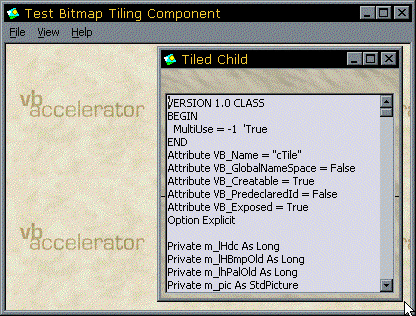

VB5 Bitmap Tiling Component Binary (14K)
VB5 Bitmap Tiling Component Binary (14K)
 VB5 Bitmap Tiling Source and Demonstration (47K)
VB5 Bitmap Tiling Source and Demonstration (47K)
 VB6 Bitmap Tiling Component Binary (14K)
VB6 Bitmap Tiling Component Binary (14K)
 VB6 Bitmap Tiling Source and Demonstration (46K)
VB6 Bitmap Tiling Source and Demonstration (46K)
 7 Jan 2003
7 Jan 2003
Posted VB6 version of the component, and updated to use FindWindowsEx to obtain the MDI client.
 vbAccelerator Toolbar and CoolMenu Control v3.5
vbAccelerator Toolbar and CoolMenu Control v3.5
 PopupMenu DLL - Create Unlimited Popup Menus
PopupMenu DLL - Create Unlimited Popup Menus
 Subclassing Without The Crashes
Subclassing Without The Crashes

Tiling Bitmaps into Controls, Forms and MDI Form backgrounds
This article provides a bitmap tiling component which allows you to:
- Tile any Device Context with a bitmap
- Automatically tile the background area of an MDI form
Tiling a bitmap into the background of a control or form can make a bit difference to its graphical impact. You can see some samples of this tiling code in use in the S Grid Control,PopupMenu DLL and Toolbar and CoolMenu Control.
As well as providing reusable code which you can extract for tiling a picture into an object in the download, this article also presents a component which encapsulates the code and provides a way of tiling the background space of an MDI form with your own custom bitmap.
Drawing whatever you like on the background of an MDI form
In order to do this, you need to be able to subclass the MDI form message. This component uses the Subclassing and Timer Assistant to enable subclassing. With that in place, here are the steps you need to take to draw into the MDI background:
- Obtain the hWnd of the background of the MDI form. The background of the MDI form is a
special window with the class "MDIClient". You can use FindWindowEx to find the
handle to this window:
Private Declare Function FindWindowEx Lib "user32" Alias "FindWindowExA" _ (ByVal hWnd1 As Long, ByVal hWnd2 As Long, _ ByVal lpsz1 As String, lpsz2 As Any) As Long ... FindWindowEx(frmThis.hwnd, 0, "MDIClient", ByVal 0&) - Subclass the WM_PAINT message for the MDI form's background window, and make sure you receive it before the default window handler.
- On receipt of the WM_PAINT message:
- Call BeginPaint to get the DC of the MDI form's background window.
- Call GetClientRect to get the size of the window.
- Draw on the DC you obtained with BeginPaint.
- Call EndPaint to commit your changes and remove the invalid parts from the areas to be repainted.
- If you want to force a refresh of the window, call GetClientRect to receive the size, and then call InvalidateRect on this area. This will cause a WM_PAINT message to be sent to your WM_PAINT handler.
You can use these techniques to achieve other effects when you paint the MDI background. For example, InstallShield (used to) put their www addresses at the bottom right hand corner of the MDI background.